Вместо схем-панелей справа в трёх продуктовых полосах — иллюстрации, сгенерированные через Freepik в палитре сайта. Три направления, каждое показано на всех трёх продуктах: так видно, держится ли один язык на всей странице.
Для всех вариантов действуют запреты брифа: без роботов, мозгов, свечения и потоков данных. В NOVAlab нет прямой линии от данных компании к моделям, всё проходит через центр. Это черновые генерации для выбора направления. Выбранное дочищу: перегенерирую слабые кадры, уберу случайный текст, при необходимости переведу в вектор.
Сюжет: фраза превращается в собранные модули и готовый пакет к развёртыванию.
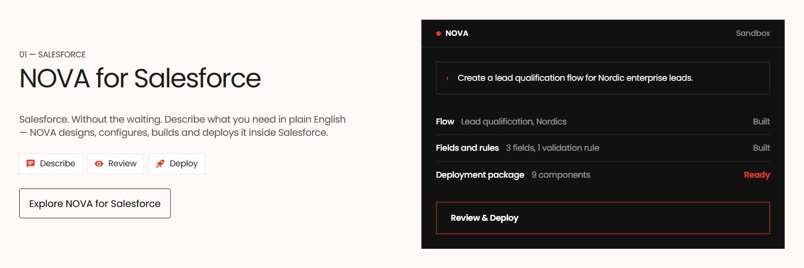
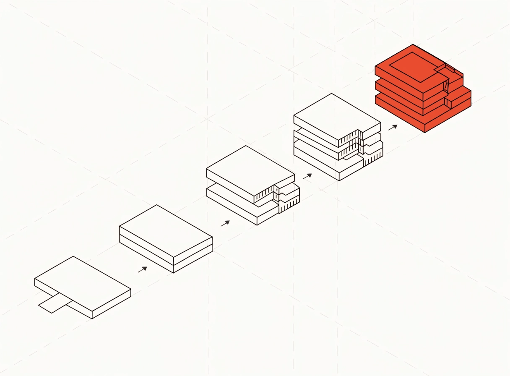
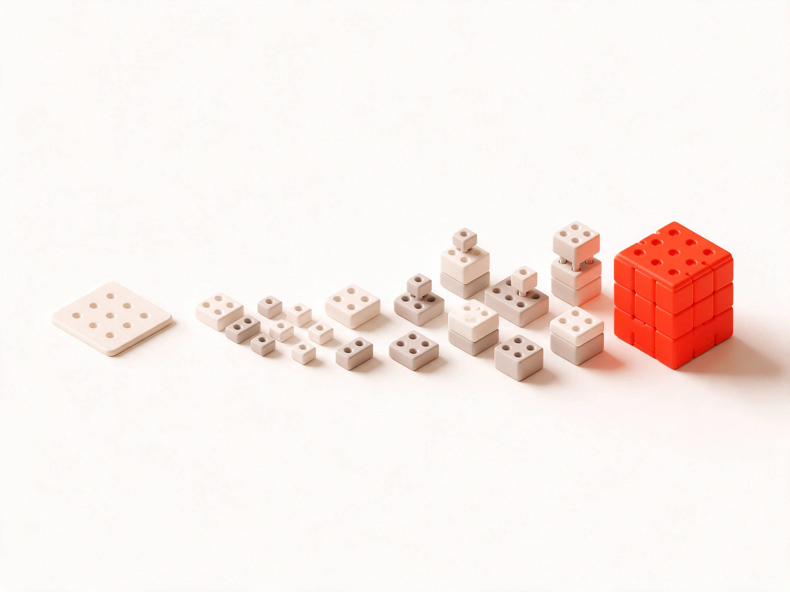
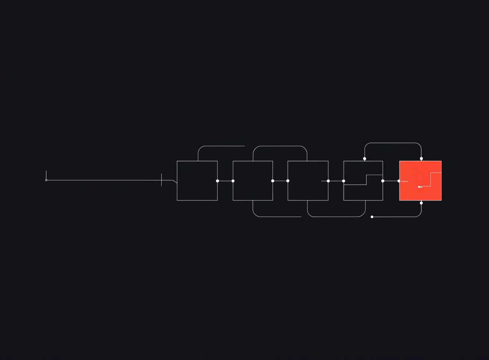
Сюжет: одна платформа, к которой пристыкованы документы, каска, календарь, бюджет, чек-лист и команда.
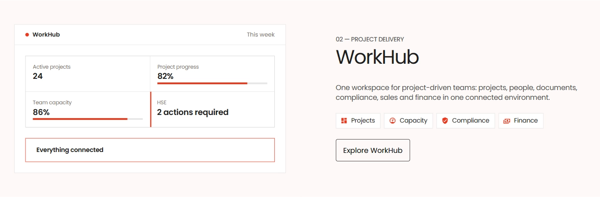
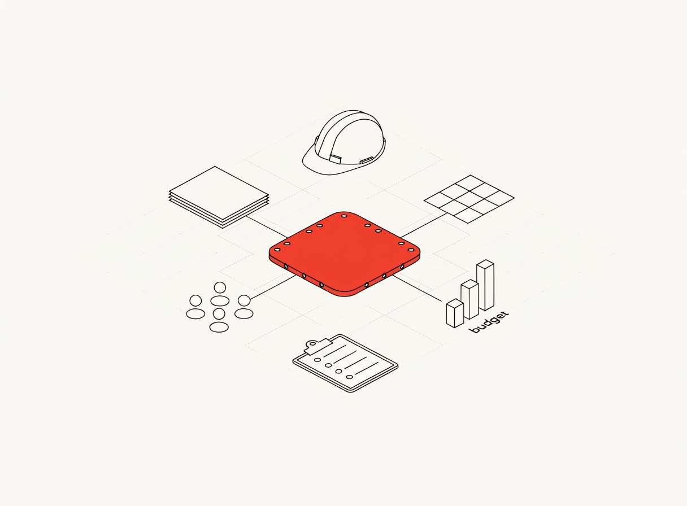
Модель вписала слово «budget» — при выборе перегенерирую без текста.
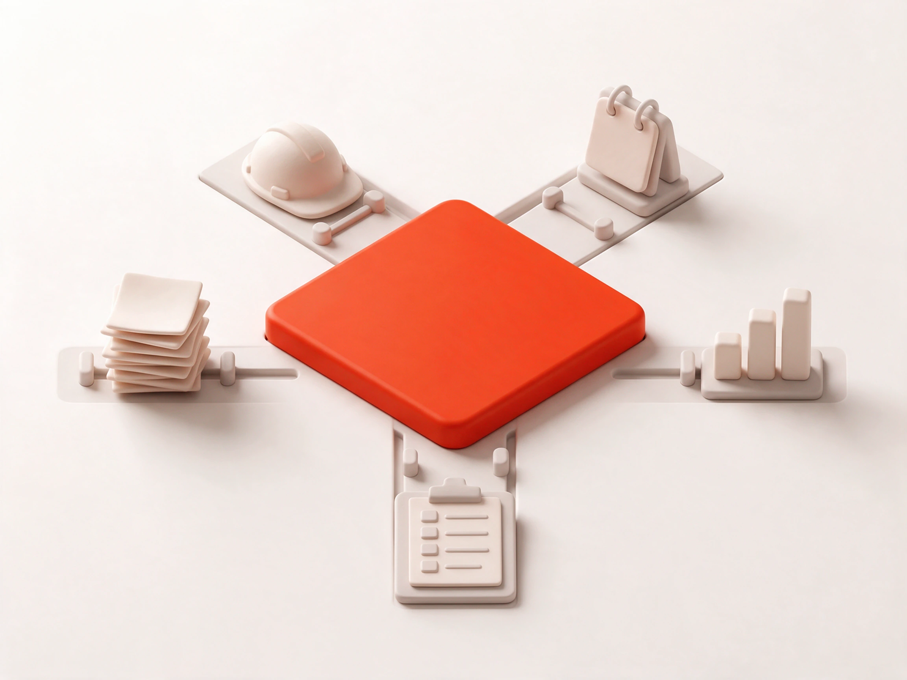
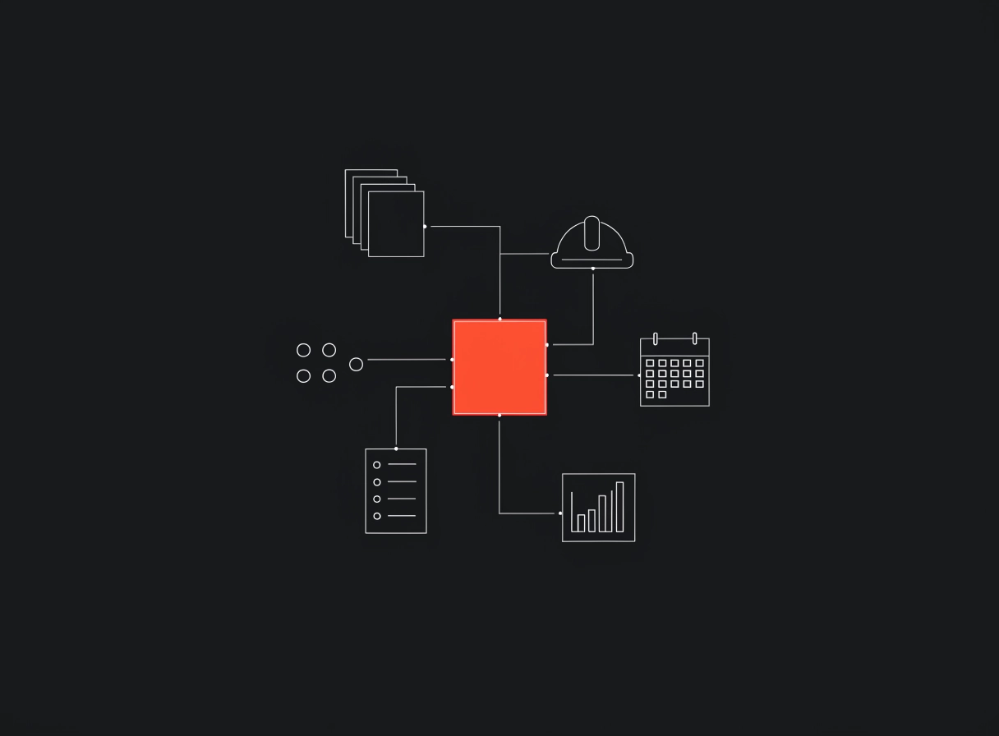
Сюжет: системы компании → защищённый слой NOVAlab → возможности и модели. Прямой связи в обход центра нет.
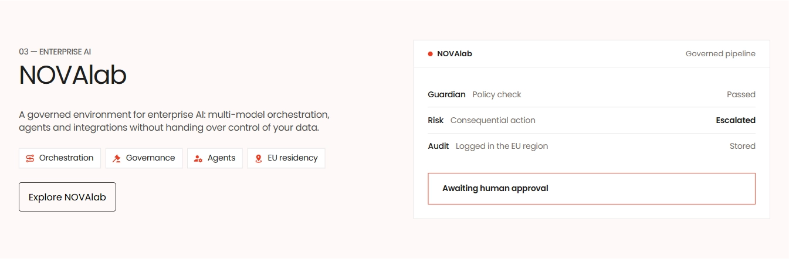
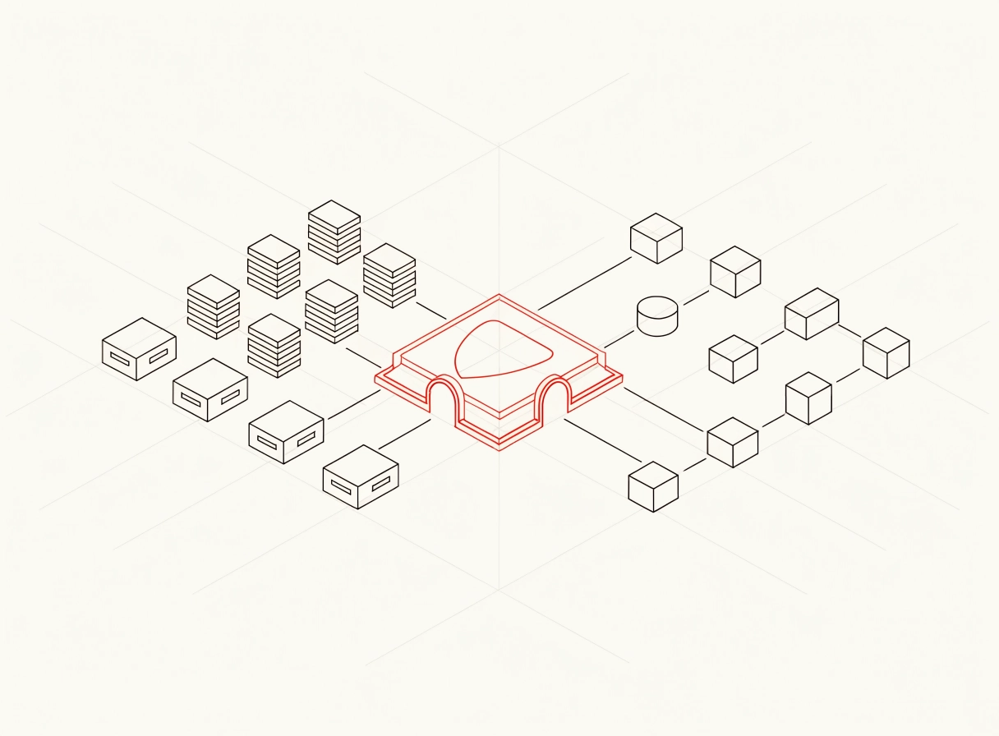
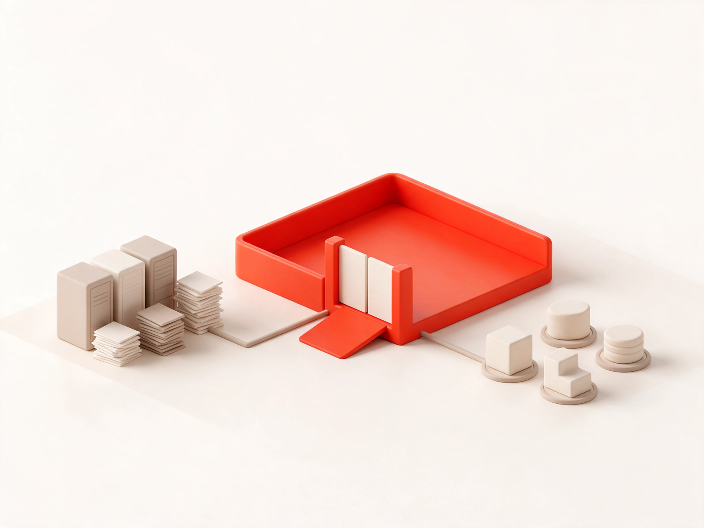
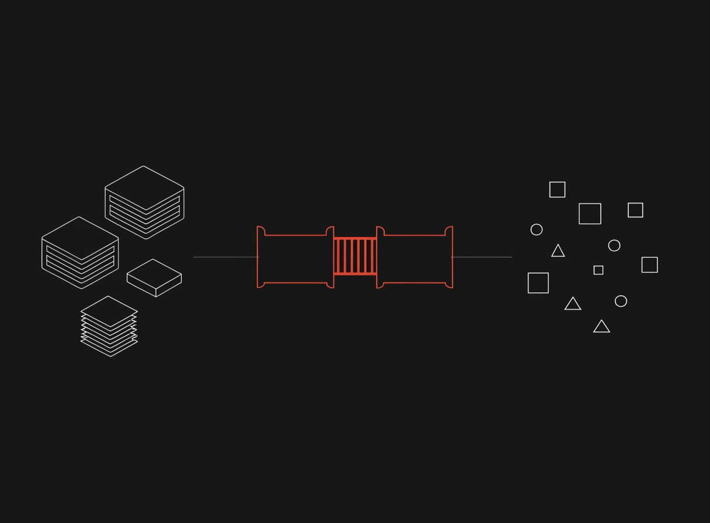